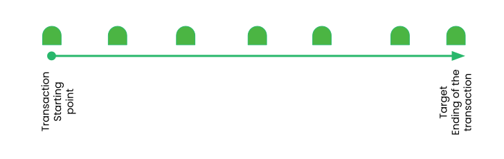
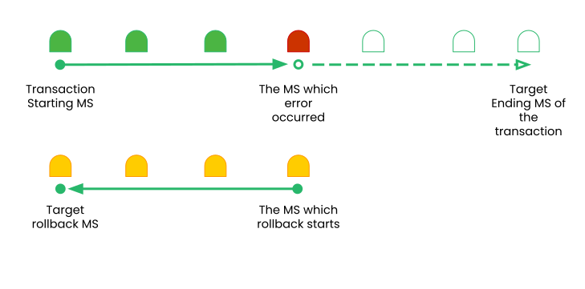
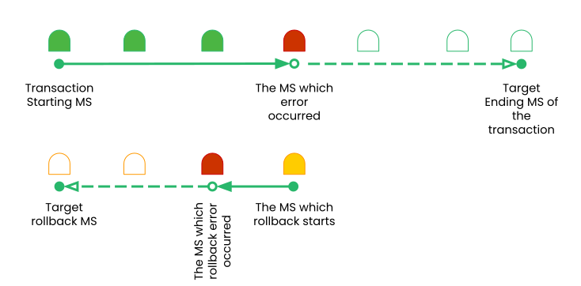
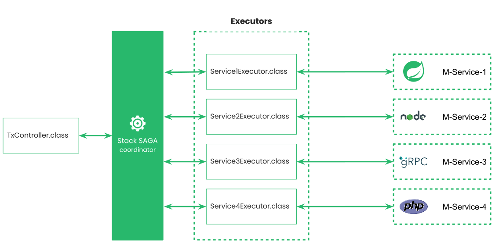
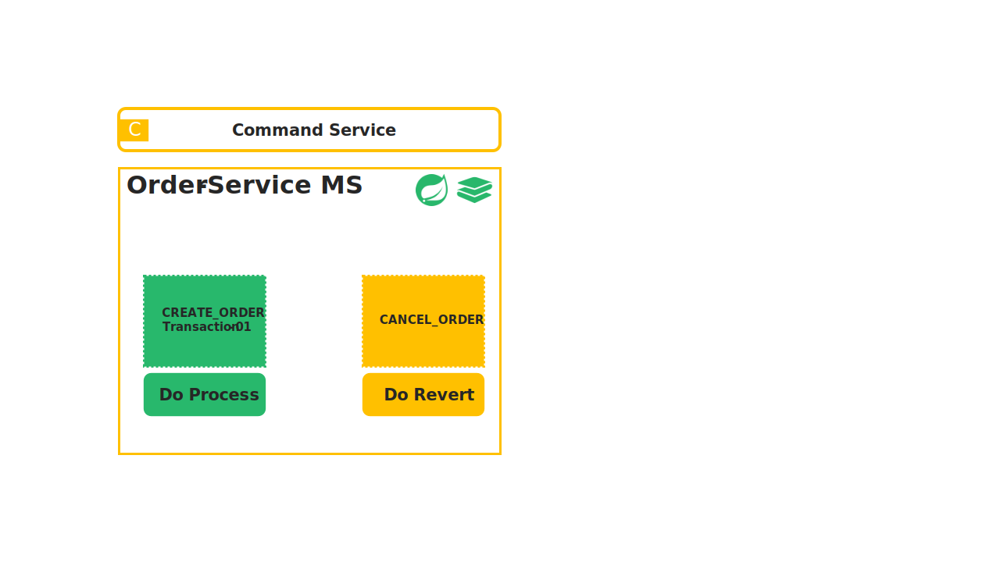
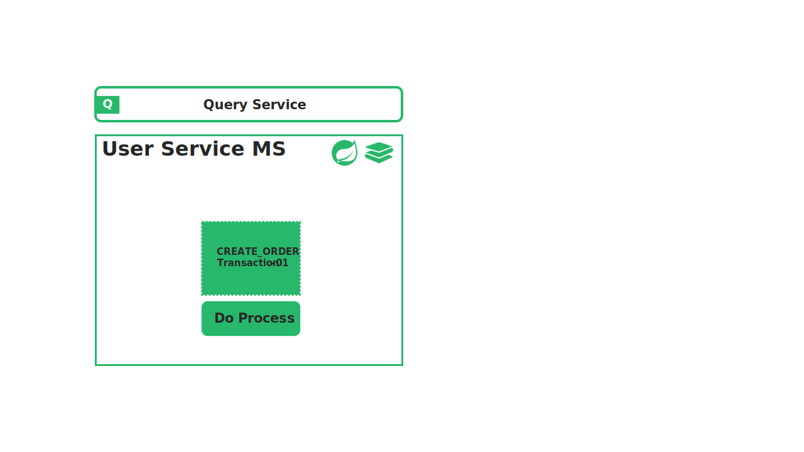

Introduction Last updated: 2019-06-01
In this section, you will get the architecture of this framework. other than that, you will get what are the limitations you have to face when you are going to use microservice architecture and how overcome those difficulties by using StackSAGA framework.
Microservice Architecture
Before dive in to the framework let's have the basic idea of microservice architecture.
A microservices architecture consists of a collection of small, autonomous services. Each
service is self-contained and should implement a single business capability within a bounded
context. A bounded context is a natural division within a business and provides an explicit
boundary within which a domain model exists.
What are microservices?
Microservices are a modern approach to software whereby application code is delivered in
small, manageable pieces, independent of others.
read more through spring microservices.

Database per Service Pattern
One of the benefits of microservice architecture is that it lets us choose the technology stack per service. For instance, we can decide to use a relational database for service A and opt for a NoSQL database for service B. This model lets the services manage domain data independently on a data store that best suites its data types and schema. Further, it also lets the service scale its datastores on-demand and insulates it from the failures of other services. However, at times a transaction can span across multiple services, and ensuring data consistency across the service database is a challenge. In the next section, let us examine the challenge of distributed transaction management with an example.
Distributed Transaction
To demonstrate the use of distributed transactions, we’ll take an example of an e-commerce application that processes online orders and is implemented with microservice architecture. There is a microservice to create the orders, one that processes the payment, another that updates the inventory and the last one that delivers the order. Each of these microservices performs a local transaction to implement the individual functionalities:
To ensure a successful order processing service, all four microservices must complete the individual local transactions. If any of the microservice fails to complete its local transaction, all of the completed preceding transactions should roll back to ensure data integrity. This is an example of a distributed transaction as the transaction boundary crosses multiple services and databases.
Challenges of Distributed Transaction
In the previous section, we’ve provided a real-life example of a distributed transaction. Distributed transactions in a microservice architecture pose two key challenges. The first one is maintaining ACID. To ensure the correctness of a transaction, it must be atomic, consistent, isolated, and durable (ACID). The atomicity ensures that all or none of the steps of a transaction should complete. Consistency takes data from one valid state to another valid state. Isolation guarantees that concurrent transactions should produce the same result that sequentially transactions would have produced. Lastly, durability means that committed transactions remain committed irrespective of any type of system failure. In a distributed transaction scenario, as the transaction spans several services, it always remains a key concern to ensure ACID. The second one is managing the transaction isolation level. It specifies the amount of data that is visible in a transaction when the other services access the same data simultaneously. In other words, if one object in one of the microservice is persisted in the database while another request reads the data, should the service return the old or new data?
Introduction to Saga
What Is Saga Architecture Pattern?
The Saga architecture pattern provides transaction management using a sequence of local transactions. A local transaction is the unit of work performed by a saga participant. Every operation that is part of the Saga can be rolled back by a compensating transaction. Further, the Saga pattern guarantees that either all operations are complete successfully or the corresponding compensation transactions are run to undo the work previously completed. In the Saga pattern, a compensating transaction must be idempotent and retryable. These two principles ensure that a transaction can be managed without any manual intervention. The Saga Execution Coordinator (SEC) ensures guarantees these principles:

The above diagram shows how to visualize the Saga pattern for the previously discussed online order processing scenario.
Classification of SAGA transactions
According to the behaviours of the transaction we can mainly identify 3 transaction types that can be happened when we use saga.
- Fully success transaction
- Rollback/Compensation/Revert success transaction
- Rollback/Compensation/Revert failed transaction
01 : Fully success transaction
As we discussed earlier, we had used number of microservices for doing one single execution. Just assume we have used 5 microservices to be executed and all of them have been worked without any errors. Then there is no revert processes have been executed. That's means, all the microservices are up and running and there haven't been occurred exceptions internally inside each microservice.
02 : Rollback/Compensation/Revert success transaction
In this time, An exception has occurred when one of microservices get execute. Just assume coordinator has been executed 3 microservices successfully but at the 4th one, an error has occurred due to a network exception or whatever internal exception that the microservices has been thrown. Now the coordinator has to execute revert function regarding the all microservices that executed earlier. So the coordinator will start to execute all the revert functions one by one as a sequence. If those revert functions has been executed successfully, this kind of transactions are going to these types. Simply we did a set of transactions but unfortunately got an error but all the revert processes are done successfully.
03 : Rollback/Compensation/Revert failed transaction
In this time, the coordinator try to execute the transactions one by one. But while doing the execution, an error get occurred after doing some executions and the coordinator get started to execute all the revert processes that regards to the microservices that previously executed. But unfortunately while doing the revert executions an error get occurred because of a network issues. (Network issues means it can be happened because of there is no endpoint in active at that time or kind of actual network problems)
Summary of Classification of SAGA
| # | TX Type | Diagram |
|---|---|---|
| 01 | Fully success transaction |  |
| 02 | Rollback/Compensation/Revert success transaction |  |
| 03 | Rollback/Compensation/Revert failed transaction |  |
Introduction to StackSAGA
StackSAGA is framework as well as kind of a design pattern for execute saga orchestration pattern with spring boot by using as a library.
Components of the stackSAGA
- Executor
- Aggregator
- StackSaga coordinator
What is an executor in stackSAGA?
As you know we have to communicate multiple microservices when we are going with microservices architecture. If we don't use stackSAGA framework you can use call your another microservice by using http client or whatever related protocol method for that particular microservice inside your single method. Just assume you have to communicate with 100 of microservices to do a transaction. Then you have to call those 100 microservices one by one inside your single method. And you can't get understand clearly those steps. But if you use stackSAGA, we don't have to worry about it. You have a template to implement and store the transaction in a clear mechanism. Those implemented classes called as executors. In other words, the classes are responsible for doing transactions and doing revert processes regarding each microservice called as executors.
Executors are mainly two types.
- command executors
- query executors
Command executors.
Assume you are going to do a transaction with 10 microservices' endpoint. Some microservices might be services that data change in their database due to the calling. As an example if it was update stock endpoint, exactly the stocks will be updated due to the calling it. According to the saga pattern every command executions like this have a compensation transaction to recompense if the transaction will not be executed as we accepted. Therefore we should recover the updated data. The classes which doing this kind of execution called as command executors.
Query executors.
If There is no data changing In the microservice's database that you called due to the calling endpoint, to execute that kind of endpoint you should use query executors. Because it's a just retrieve the data to get a decision. Nothing to recover.
Aggregator
Stacksaga goes with a unique design pattern called "one controller per transaction". One transaction has a one aggregator. An aggregator workers as a identifier as we as the dataset of your transaction.
As the Identifier
all the classes regarding the transaction will be related with the aggregator class. Without keeping a relation with aggregator those classes will not be able to go through the stackSAGA coordinator. Check out the code example.
As the dataset container
Aggregator act as the dataset container throughout entire transaction. If you are going to do a transaction, you want some data to pass to the service. Those data is stored in the aggregator. Check out the code example.
By considering the following image you can get understand what kind of relationship has between the aggregator and others class that you want to execute the transaction.
Act as a coordinator
StackSAGA framework mainly focus on saga orchestration design pattern. The main responsibility is, manage all the execution for each microservice one by one. And if an error occurred, do a compensation for all executed transactions that affected to the database due to the transaction that been happening until the error and keep all the states of each transaction as can be replied in a store. As well as the framework provides you to a clean and clear architecture to store your code regarding each microservice instead of calling all the microservices inside your boilerplate single method. If you use stackSAGA framework you don't want to worry about the compensation and other boring stuff, because the only thing you have to do is, provide your logic inside of saga executors. Then the StackSAGA coordinator will coordinate all the microservices and if an error occurred the coordinator has the knowledge to undo all the execution that been doing until now.
Act as a circuit breaker
If you are use stackSAGA for all microservices (with spring boot), the framework can identify the active services and broken down services. Because stackSAGA uses redis server internally to communicate through each microservice. Read more..
Provides multiple execution methods
The framework provides you to do the transaction multiple ways as synchronous way, asynchronous way, and hybrid way
Tracing dashboard
The framework provides a dashboard to see all the executed transactions and how the transaction got behave.
StackSAGA Execution Approaches
according to the requirements of requests, execution approaches are 3 types.
- Send As Synchronous
- Send As Fire And Forget
- Fire And Forget full process
- Fire And Forget On Process
Summary of Execution Approaches
| # | Execution Approaches | Method/Function | Description |
|---|---|---|---|
| 01 | Synchronous | process() |
Fire the request and the request keep waiting until process complete or get an error when executing one of executors' do-revert method. (The request will be forgotten if only occurred a do-revert error). the rest of execution will be done by the coordinator, and after completing the execution, controller class's listener will be notified by saga coordinator. |
| 02 | Fire And Forget | fireAndForget() |
fire the request and forget. after completing the process controller class's listener will be notified by saga coordinator. |
| 03 | Fire And Forget On Process | fireAndForgetOnProcess() |
Fire the request and the request keep waiting until process complete or get an error when executing one of executors' do-process method. (The request will be forgotten if occurred a do-process error). the rest of execution will be done by the coordinator and after completing the execution, controller class's listener will be notified by saga coordinator. |
- Fully success transaction
- Rollback/Compensation/Revert success transaction
- Rollback/Compensation/Revert failed transaction
01 : Fully success transaction
- 1 As the first step a request cokes to the microservice which we are going to start transaction.
- 2 the request mapping method will catch the request handover the process into stack saga template (stack saga state machine). After that the SSSM will take care of all the process onwards.
-
3
Before doing any execution process, SSSM saves the dataset which it got initially in
event store.
Note
Now is the time to be executed all the service classes one by one to do the transaction fallowing the instructions that you have coded.
- 4 you are already know that you can use the main server that you want to start the transaction as the coordinator. Then it will act as a coordinator as well as a microservice. Therefore, the first execution will be a self transaction. (The request not going to another service).
- 4.1 after executing the do-process method successfully, updated dataset will be saved in the event store.
- 4.2 after saving the event state in the store the main service class will be notified as one execution has been processed successfully. (This is the place that you can update the status of the transaction each time after doing execution successfully)
- 5 CheckUserStatus executor class will be executed because of the previous execution doing successfully.
- 5.1 same as the first execution, after executing the do-process method successfully, updated dataset will be saved in the event store.
- 5.2 same as the first execution, after saving the event state in the store the main service class will be notified as one execution has been processed successfully.
- 6 StockUpdate executor class will be executed because of the previous execution doing successfully.
- 6.1 same as the previous execution, after executing the do-process method successfully, updated dataset will be saved in the event store.
- 6.2 same as the previous execution, after saving the event state in the store the main service class will be notified as one execution has been processed successfully
- 7 MakePayment executor class will be executed because of the previous execution doing successfully.
- 7.1 same as the previous execution, after executing the do-process method successfully, updated dataset will be saved in the event store.
- 7.2 same as the previous execution, after saving the event state in the store the main service class will be notified as one execution has been processed successfully.
- 8 The stackSAGA coordinator (SSC) knows the process is completed now. Therefore, it will notify to the onComplete method inside the controller (it is an Asynchronous invocation).
- R9 R9 after completing all the process SSC returns to the controller with all the historical dataset that executed.
- R10 The controller returns the response back to the client.
As we discussed earlier, we had used number of microservices for doing one single execution. Just assume we have used 5 microservices to be executed and all of them have been worked without any errors. Then there is no revert processes have been executed. That's means, all the microservices are up and running and there haven't been occurred exceptions internally inside each microservice.
02 : Rollback/Compensation/Revert success transaction
- 1 As the first step a request cokes to the microservice which we are going to start transaction.
- 2 the request mapping method will catch the request handover the process into stack saga template (stack saga state machine). After that the SSSM will take care of all the process onwards.
-
3
Before doing any execution process, SSSM saves the dataset which it got initially in
event store.
Note
Now is the time to be executed all the service classes one by one to do the transaction fallowing the instructions that you have coded.
- 4 you are already know that you can use the main server that you want to start the transaction as the coordinator. Then it will act as a coordinator as well as a microservice. Therefore, the first execution will be a self transaction. (The request not going to another service).
- 4.1 after executing the do-process method successfully, updated dataset will be saved in the event store.
- 4.2 after saving the event state in the store the main service class will be notified as one execution has been processed successfully. (This is the place that you can update the status of the transaction each time after doing execution successfully)
- 5 CheckUserStatus executor class will be executed because of the previous execution doing successfully.
- 5.1 same as the first execution, after executing the do-process method successfully, updated dataset will be saved in the event store.
- 5.2 same as the first execution, after saving the event state in the store the main service class will be notified as one execution has been processed successfully.
- 6 StockUpdate executor class will be executed because of the previous execution doing successfully.
- 6.1 same as the previous execution, after executing the do-process method successfully, updated dataset will be saved in the event store.
- 6.2 same as the previous execution, after saving the event state in the store the main service class will be notified as one execution has been processed successfully
- 7 MakePayment executor class will be executed because of the previous execution doing successfully.
- 7.1 same as the previous execution, after executing the do-process method successfully, updated dataset will be saved in the event store.
- 7.2 same as the previous execution, after saving the event state in the store the main service class will be notified as one execution has been processed successfully.
- 8 The stackSAGA coordinator (SSC) knows the process is completed now. Therefore, it will notify to the onComplete method inside the controller (it is an Asynchronous invocation).
- R9 R9 after completing all the process SSC returns to the controller with all the historical dataset that executed.
- R10 The controller returns the response back to the client.
In this time, An exception has occurred when one of microservices get execute. Just assume coordinator has been executed 3 microservices successfully but at the 4th one, an error has occurred due to a network exception or whatever internal exception that the microservices has been thrown. Now the coordinator has to execute revert function regarding the all microservices that executed earlier. So the coordinator will start to execute all the revert functions one by one as a sequence. If those revert functions has been executed successfully, this kind of transactions are going to these types. Simply we did a set of transactions but unfortunately got an error but all the revert processes are done successfully.
03 : Rollback/Compensation/Revert failed transaction
- 1 As the first step a request cokes to the microservice which we are going to start transaction.
- 2 the request mapping method will catch the request handover the process into stack saga template (stack saga state machine). After that the SSSM will take care of all the process onwards.
-
3
Before doing any execution process, SSSM saves the dataset which it got initially in
event store.
Note
Now is the time to be executed all the service classes one by one to do the transaction fallowing the instructions that you have coded.
- 4 you are already know that you can use the main server that you want to start the transaction as the coordinator. Then it will act as a coordinator as well as a microservice. Therefore, the first execution will be a self transaction. (The request not going to another service).
- 4.1 after executing the do-process method successfully, updated dataset will be saved in the event store.
- 4.2 after saving the event state in the store the main service class will be notified as one execution has been processed successfully. (This is the place that you can update the status of the transaction each time after doing execution successfully)
- 5 CheckUserStatus executor class will be executed because of the previous execution doing successfully.
- 5.1 same as the first execution, after executing the do-process method successfully, updated dataset will be saved in the event store.
- 5.2 same as the first execution, after saving the event state in the store the main service class will be notified as one execution has been processed successfully.
- 6 StockUpdate executor class will be executed because of the previous execution doing successfully.
- 6.1 same as the previous execution, after executing the do-process method successfully, updated dataset will be saved in the event store.
- 6.2 same as the previous execution, after saving the event state in the store the main service class will be notified as one execution has been processed successfully
- 7 MakePayment executor class will be executed because of the previous execution doing successfully.
- 7.1 same as the previous execution, after executing the do-process method successfully, updated dataset will be saved in the event store.
- 7.2 same as the previous execution, after saving the event state in the store the main service class will be notified as one execution has been processed successfully.
- 8 The stackSAGA coordinator (SSC) knows the process is completed now. Therefore, it will notify to the onComplete method inside the controller (it is an Asynchronous invocation).
- R9 R9 after completing all the process SSC returns to the controller with all the historical dataset that executed.
- R10 The controller returns the response back to the client.
In this time, the coordinator try to execute the transactions one by one. But while doing the execution, an error get occurred after doing some executions and the coordinator get started to execute all the revert processes that regards to the microservices that previously executed. But unfortunately while doing the revert executions an error get occurred because of a network issues. (Network issues means it can be happened because of there is no endpoint in active at that time or kind of actual network problems)